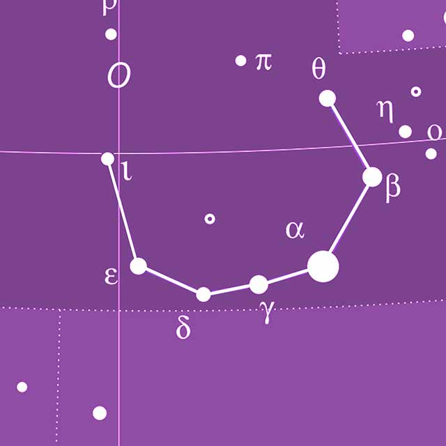

کاوشی در آسمان شب و طبیعتِ گیتی
آگاهی از رویدادهای مهم آسمان شب ، راهنمای رصدی وقایع نجومی و برنامههای عمومی
راهنماهای پایه و ابزارهای آنلاین برای رصدگران

چرا صاف و بیابر بودن آسمان بهتنهایی کافی نیست؟ مروری بر دو شاخصی که کیفیت واقعی یک شب رصد را رقم میزنند.
بیشتر ↗
آسمان پرستاره تنها مورد علاقه انسانهای کنجکاو نیست بلکه مناطقِ آسمان تاریک زیستگاه بسیاری از جانداران است که به تاریکی آسمان شب برای بقای خود نیاز دارند. تلاش برای مبارزه با آلودگی نوری نه تنها برای امور علمی اهمیت دارد که نوعی فعالیت در راستای حفظ محیط زیست نیز محسوب می شود.
بیشتر ↗
محسابه گذر ایستگاه فضایی بینالمللی از آسمان شهرهای ایران ، اطلاع از آخرین وضعیت دنبالهدارهای قابل مشاهده، نقشه تعاملی آسمان ، وضعیت لحظهای قمرهای سیاره مشتری و ابزارهای کاربردی دیگر.
ورود به ابزارها ↗
نسخههای قابل چاپ نقشههای فصل به زبان فارسی به همراه منابع رصدی اجرام غیرستارهای و فهرستهای رصدی پیشنهادی رصدگران کاوش.
ورود به ابزارها ↗
برگزاری شبهای رصدی، گشتهای رصدی خصوصی و نیمهخصوصی و برنامههای عمومی و آموزشی برای عموم و کودکان

کارگاههای آموزشی عکاسی آسمان شب و پردازش تصاویر نجومی

کارگاههای آموزشی نجوم رصدی بصورت حضوری و دورههای آنلاین و آفلاین آموزشی نجوم برای کودکان و بزرگسالان